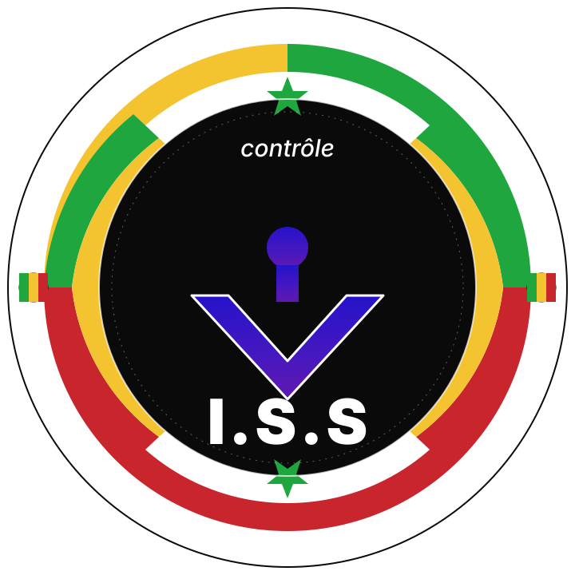

L'identité comme preuve.
TAct H conçoit des emblèmes et identités pour institutions, administrations et organisations qui exigent du sens et du soin.
Voir les réalisations
Inspection des Services
de Sécurité.

Armée de l'Air
du Sénégal.
Proposition personnelle — rebranding non officiel.


Survolez l'un ou l'autre pour comparer.
D'autres réalisations.
Un trait juste. Une forme qui dure. Un sens immédiat.
Confiez-nous votre identité.
Sur invitation et recommandation. Réponse sous 48h.